Community Draft
jigr - User guide
project, infoiasi, cliw, web
project, infoiasi, cliw, web
This Web application allows solving puzzles proposed by the program or defined by users. Each player will be able to select - locally or remotely via a URL - an image that will be cropped at runtime into fragments as complicated as possible. The pieces will be mixed, the shifts / swings can be performed via drag & drop operations. The application will also provide support for snap placement in the right area. The current status of each puzzle can be saved locally with the possibility of subsequent restoration. The game can also be played offline (directly in the Web browser without the need for Internet access).
A Help section is also available in the application, and by selecting it you will have access to additional information that can help you during the game.
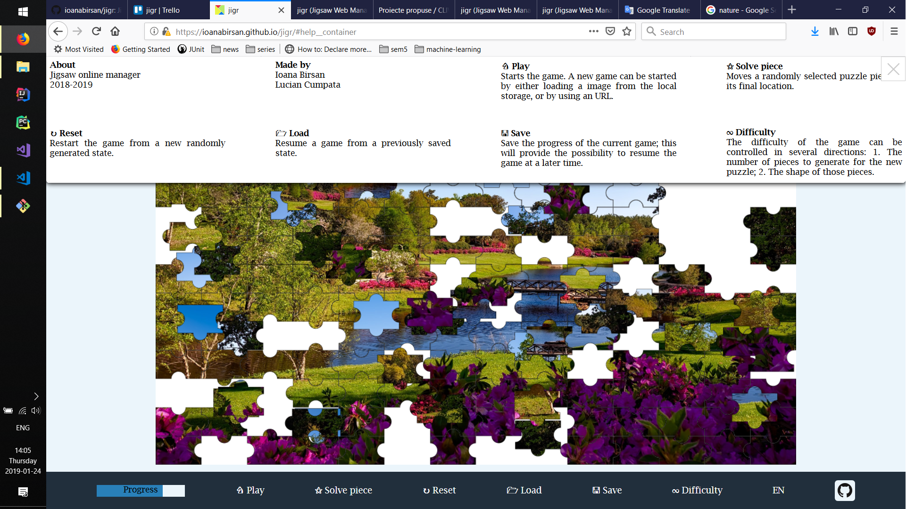A new game can be started by either loading a image from the local storage, or by using an URL.
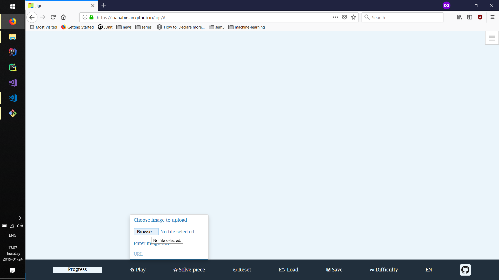After selecting the image, the split image will appear on the screen in randomly displayed puzzle pieces.
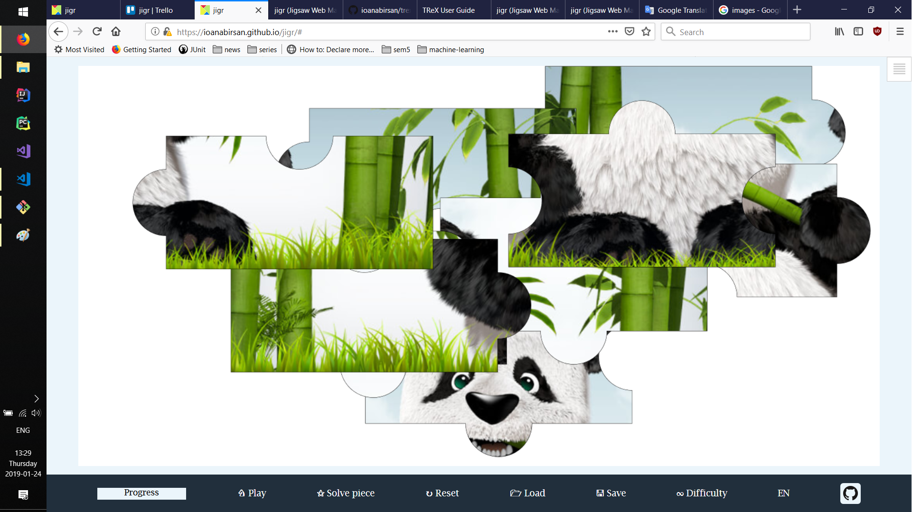Also, as more and more pieces are solved, the progress of the game is updated.
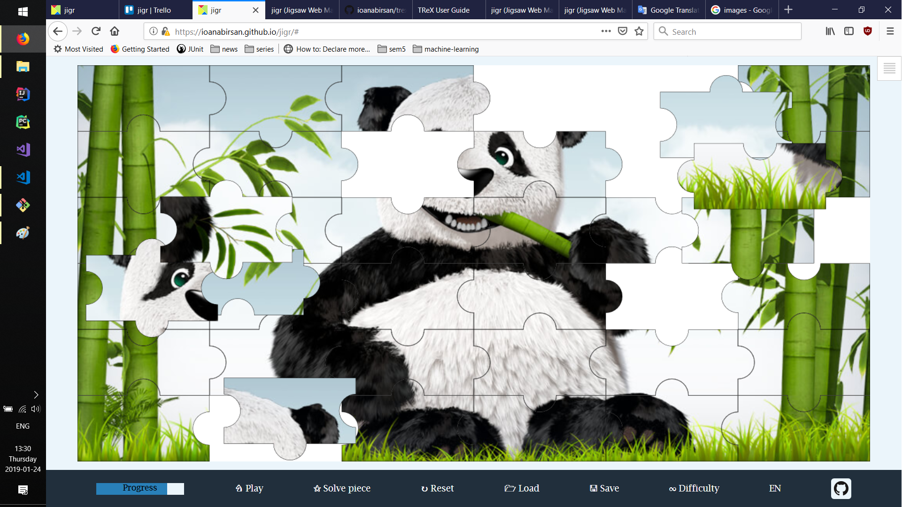When selecting Solve piece a randomly selected puzzle piece will be moved to its final location.
Reset button will restart the game from a new randomly generated state.
You can also save the progress of the current game; this will provide the possibility to resume the game at a later time.
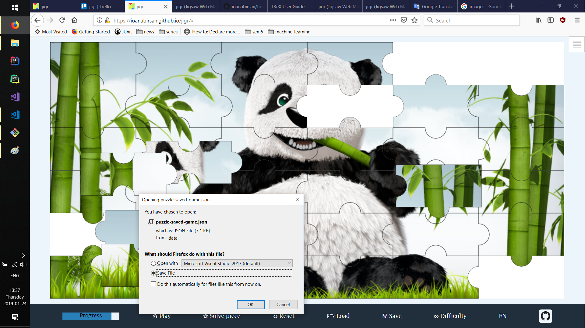The game also offers the possibility of loading a game from a previously saved state.
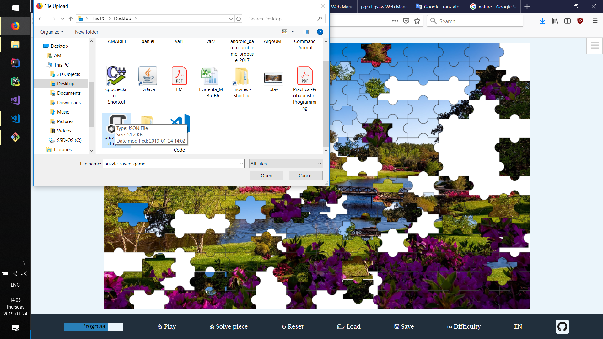The difficulty of the game can be controlled in several directions:
Initially, the difficulty of the game is preset at a minimal to medium level. This can be changed during the game, and by selecting the Reset button, it will be updated according to the currently selected option.
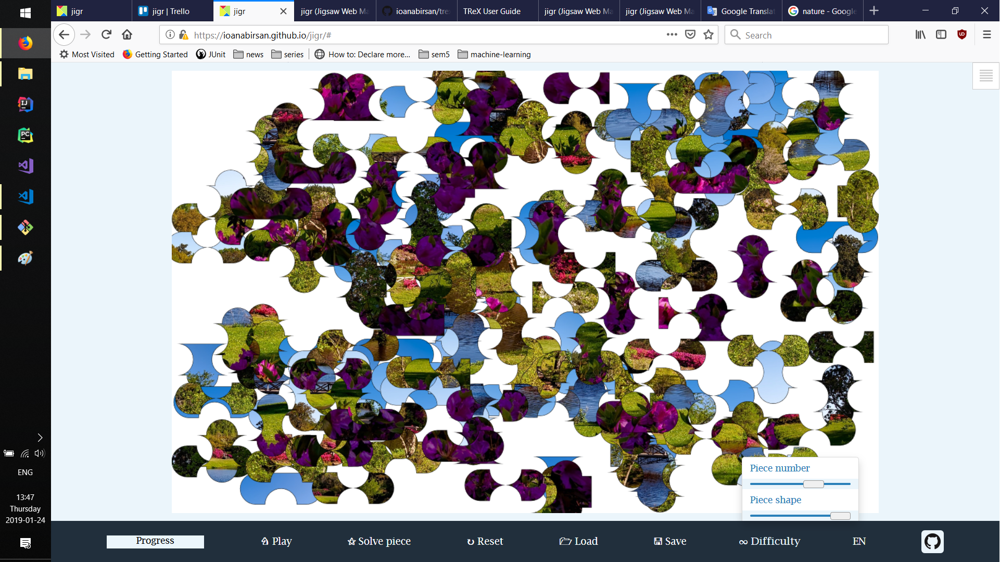To help the user, the game also offers the following functionality: by pressing the Space key, he will be able to view the full image.
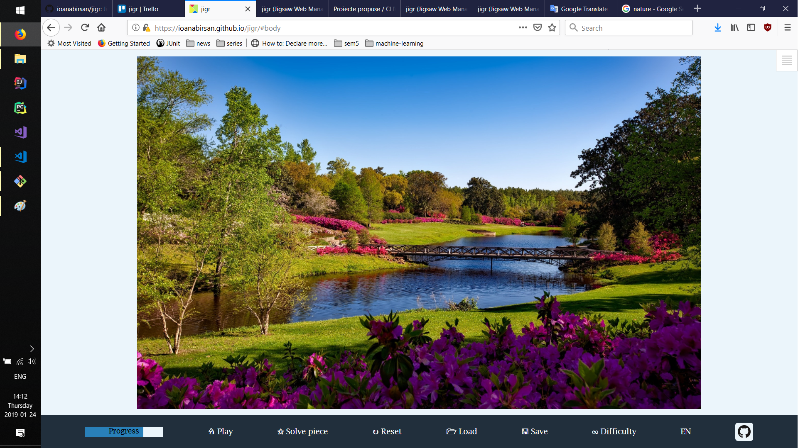The game is available in 4 languages: English, Romanian, Russian and French. You can select the desired language by pressing the Language button.
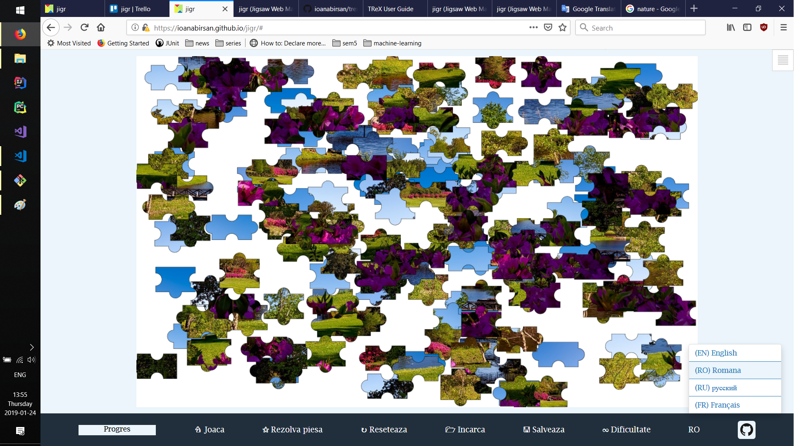When the application is reopened, at a later time, it will first check to see if there is a previous game saved at the predefined key in the Local Storage, and it will resume it; otherwise, it will present the user the normal flow. When reloading the game page, a notification will appear on the screen.
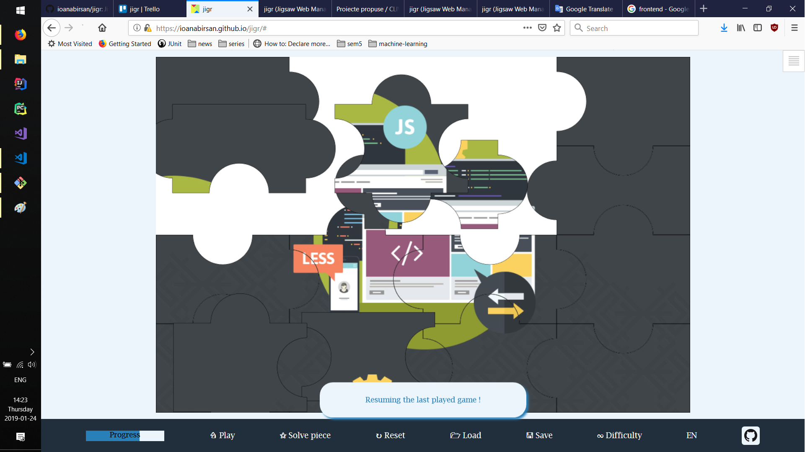Upon completion of the puzzle, a message will appear on the screen to notify the user of this event.
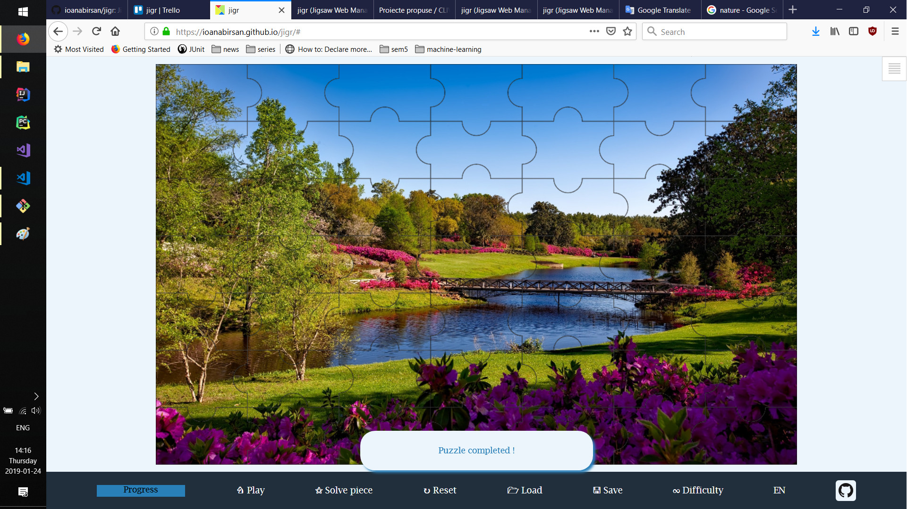